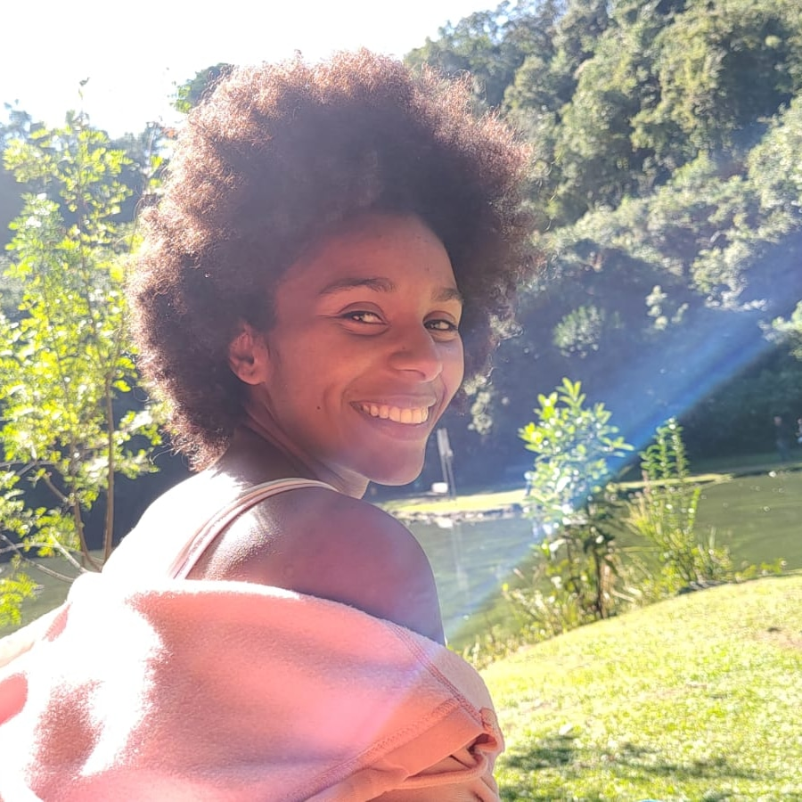
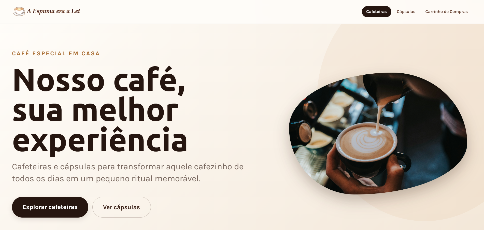
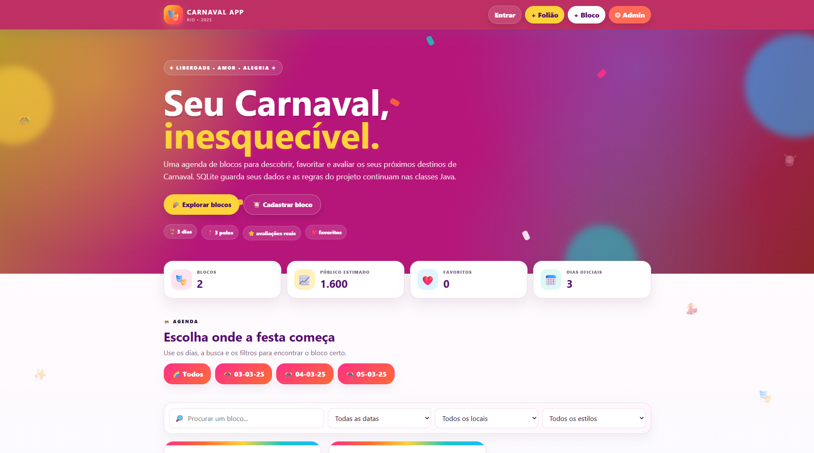
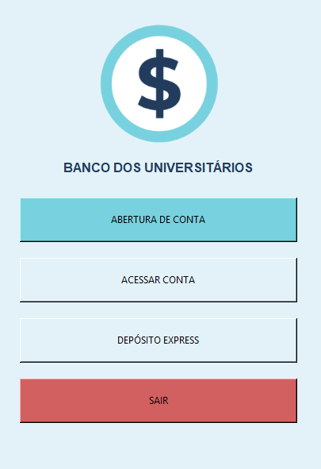
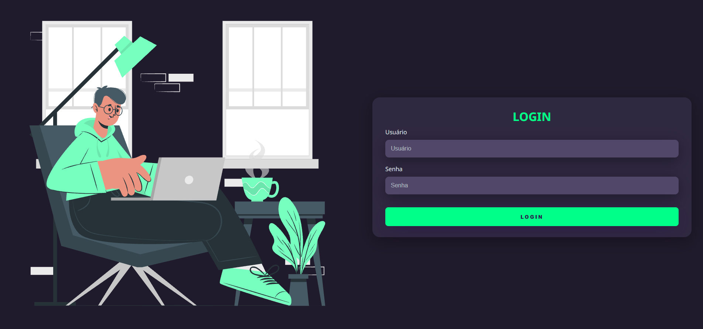
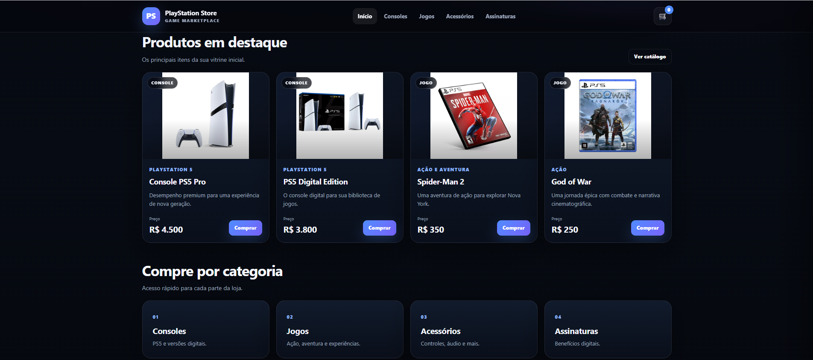
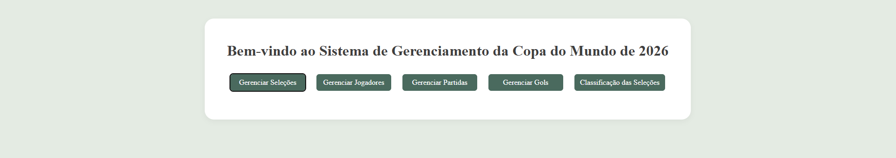

DESENVOLVIMENTO
Sistemas web
Desenvolvimento, manutenção e evolução de sistemas web, contribuindo para a implementação e melhoria de soluções de software.

Tecnologia, desenvolvimento de sistemas e segurança da informação com uma base multidisciplinar entre software, infraestrutura e hardware.
Tecnóloga em Sistemas de Computação pela UFF, com formação técnica em Eletromecânica e experiência em tecnologia da informação na Marinha do Brasil.
Desenvolver. Investigar. Organizar. Resolver. Aprender continuamente.
Militar do Corpo Auxiliar de Praças
Agosto de 2021 — Atual
Desenvolvimento, manutenção e evolução de sistemas web, contribuindo para a implementação e melhoria de soluções de software.
Análise e correção de problemas em sistemas, instalação e configuração de softwares e atendimento a usuários.
Configuração e concessão de acessos a sistemas e recursos de tecnologia da informação.
Elaboração, atualização e organização de documentação técnica em ambiente multidisciplinar.
Atuação em manutenção eletromecânica e eletrônica em meios navais, conectando tecnologia digital e sistemas físicos.

Universidade Federal Fluminense · Rio de Janeiro · 2026

Marinha do Brasil · Agosto de 2021 — Atual
Uma seleção de projetos acadêmicos e pessoais destacando desenvolvimento, arquitetura de sistemas e experiência do usuário.

Projeto digital com foco em identidade, experiência e apresentação de um negócio de café.

Conceito para organizar informações, eventos e experiências ligadas aos blocos e à programação.

Proposta de experiência para serviços financeiros, com atenção a clareza, fluxo e segurança.

Projeto com objetivo de trabalhar a implementação de responsividade.

Comércio de consoles e jogos.

Planejamento e organização de uma competição acadêmica, com estrutura de participantes, regras e calendário.
Certificações e cursos complementares abrangendo desenvolvimento de sistemas, redes, governança e segurança da informação.
Inglês Compreende razoavelmente · fala pouco · lê razoavelmente · escreve pouco
Espanhol Compreende razoavelmente · lê razoavelmente
Aberta para desenvolvimento e colaboração em projetos, além de conversas sobre tecnologia da informação.